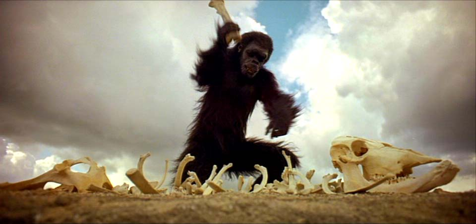
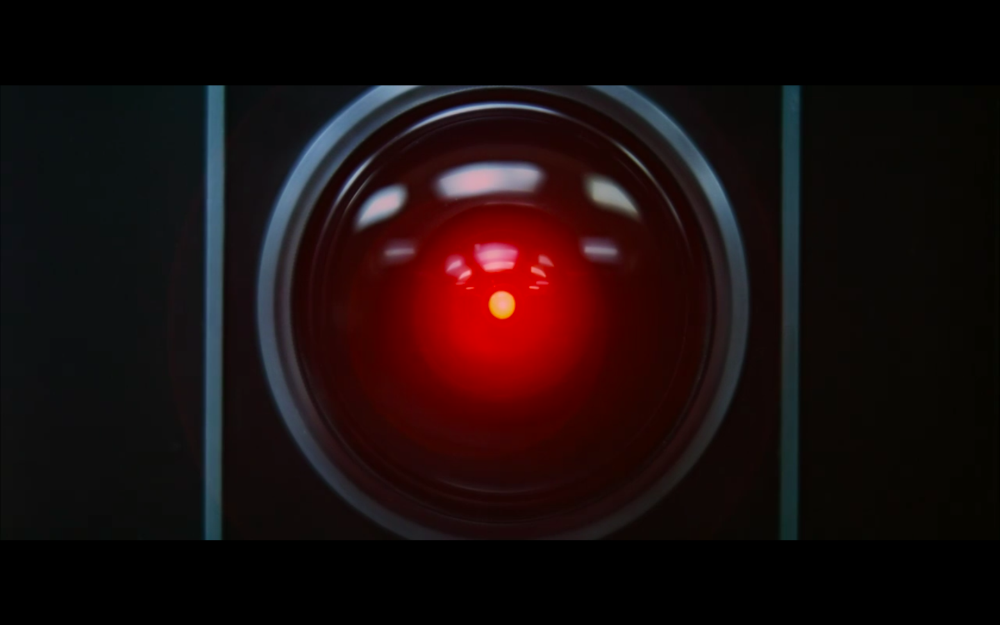
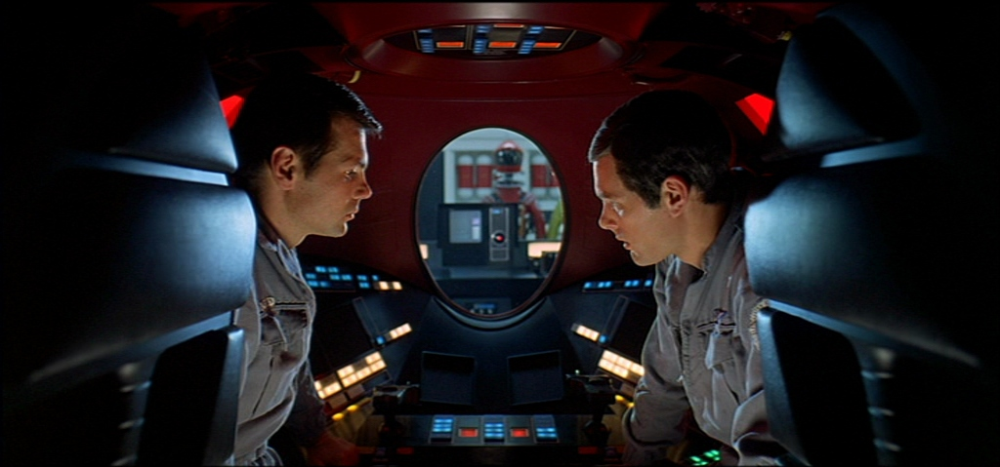
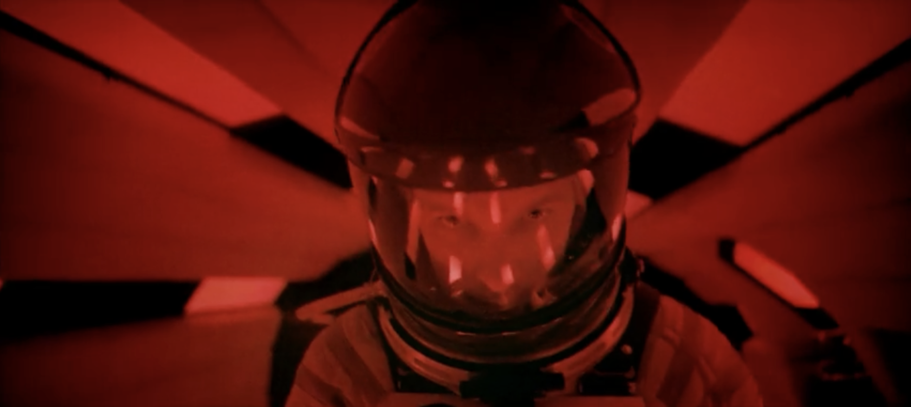
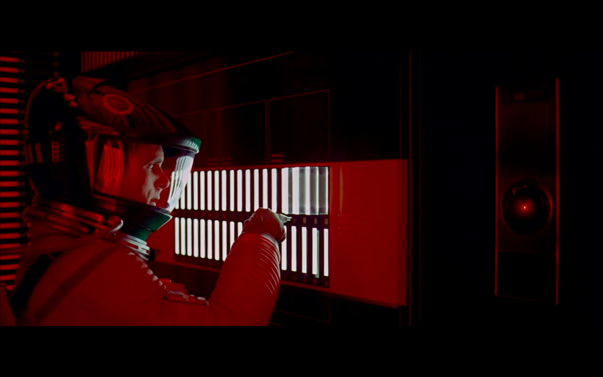

2001: A Space Odyssey Explained
About The Website
Welcome to 2001 Explained. This website
serves as a guide to viewers of 2001:
A Space Odyssey who may be puzzled by the film’s slow
pacing,
long silences, and seemingly strange stylistic choices.
Here, we break down key scenes to reveal how Stanley Kubrick
uses these techniques to shape the movie’s atmosphere,
meaning, and overall viewing experience.
Explore each section using the navigation
bar above to dive deeper into the film’s most iconic sequences,
complete with detailed analyses and visual breakdowns. Whether
you’re a first-time viewer or a longtime fan of the movie, this
site aims to
help your understanding and appreciation of Kubrick’s
masterpiece.
This sequence begins by showing early hominids (in this case, apes) living in a prehistoric landscape. A monolith then appears, and the apes curiously touch it and run in circles. One of the apes then learns to use the bone as a tool, with a shot of the monolith appearing in the middle of the apes' “evolution”, and they use these bones as a weapon to dominate over rivals and prey. This sequence ends with a thrown bone to a spacecraft.
The Dawn of Man begins by creating a hostile and harsh environment, with little life besides the apes and tapirs, and an emphasis on struggle for survival. The apes’ first encounter with the monolith serves as an introduction to the pattern that organizes the story: the monolith creates a transformative leap in evolution and technology that drives the story to its next part. The appearance of the monolith serves as the film’s major plot catalyst, as it broke the lifestyle we originally saw and introduced the use of tools. This is carried on through the movie, as we see more occurrences of the monolith pushing advancements in society. The moment the ape discovers how to use the bones, the film's first instance of conflict also occurs, leading to the tribe's shift in power. The match cut from the bone to the spacecraft is also an important narrative transition, as it allows the film to move thousands of years into the future while maintaining the cause-and-effect established earlier: technological advancement moving the story forward. Overall, this sequence sets the scene for the rest of the story, with the monolith contact creating a new form of intelligence and moving the plot forward.

The monolith is a piece of alien technology that represents evolution and advancement. Kubrick frames the monolith in ways that suggest it represents an external drive for evolution. When the ape starts to use the bones as tools, a shot of the monolith appears in the middle, and it symbolizes the advancement and evolution of the apes. As they use the bone, it represents technology, but also the double-edged nature of human intelligence. While it was used to help the apes get food and help them survive, it was also used to kill other apes and rise in power. After this, we see a final scene with the apes throwing the bone into the air, before it match cuts into a spacecraft. This transition shows how the evolution of the bone mirrors humans' evolution to space travel, creating a connection between evolution and advancing the story.

In the sequence, the landscape is depicted as a wide, barren desert, which emphasizes the vulnerability and insignificance of early hominids. Without any technological advancements, the land was mostly undisturbed by them. The lighting seemed to be very natural, but was harsh with long shadows that highlighted the mess and barbaric nature of the land. With the animals fighting for survival, the lighting creates an animalistic environment. Kubrick relies completely on visual aspects to convey his story during this sequence, as film director and award-winning cinematographer Sareesh Sudhakaran states, “The ‘Dawn of Man’ Sequence from 2001: A Space Odyssey is a sublime example of ‘Pure Cinema’. Kubrick completely omits dialogue and relies on visuals and music to deliver one of the greatest and well-known openings in film history.” This reliance on imagery also describes the development of the apes. At the beginning of the sequence, the apes were clustered and close together, especially seen in the nighttime scene. However, as they developed, we see the apes more spread out and fighting each other, visually showing psychological development in the apes. The contrasting vertical and geometric style of the monolith emphasizes its alien origin and stands out to the watcher.
In the closing shot of “Dawn of Man,” an ape throws a bone into the air. As the bone flies through the air, the movie cuts to a shot of a rotating space station in space. The rotating space station, a common theme in science fiction, is used to create artificial gravity using centripetal force. This technology has been an area of research in real-life space travel, providing a scientific basis for the space station. The opening shot of the space station reveals that humanity has comfortably expanded into outer space and establishes the setting for the rest of the movie.
From a mise-en-scene perspective, the music and the shot of the space station work together to create a sense of elegance and mechanical precision associated with futuristic technology. The rotating space station, used to create artificial gravity, serves as a spectacle for the viewers; it seems to be moving effortlessly, creating a sense of wonder towards the future technologies humans will develop. The music further amplifies this mood. In the background, the familiar “Blue Danube Waltz” plays, which has a recognizable “circular” quality to it with its repeating dance-like rhythm. The upbeat classical music creates a sense of elegance and effortlessness, adding to the technological perfection the viewers see in the space station.

The similarities between the shot of the rotating bone and the space station suggest that they both represent the same thing: human progress and innovation. Furthermore, since both objects are rotating in their respective scenes, it seems like they symbolize humanity’s never-ending desire to innovate. Going deeper, both symbols are used as humanity’s tools to adapt to different environments: the bone is used as a weapon, and the station is used to adapt to space. Therefore, the wheel of the station seems to also represent humanity’s ingenuity in altering and adapting to environments.
In the futuristic portion of the film, humanity has reached a high level of technological advancement, including moon bases that Dr. Floyd arrives at and space travel. Dr. Floyd then travels to the Clavius Base to investigate a newly discovered monolith that was originally buried underground. When sunlight hits the monolith, it emits a radio signal aimed at Jupiter.
This sequence acts as the film’s second major narrative shift, as it introduces a new stage in the pattern established in the Dawn of Man. The discovery of the monolith at TMA-1 interrupts the daily life of the advanced humans in the same way it disrupted the apes. It once again serves as a plot catalyst that pushes the story into its next phase. The monolith reveals that aliens have been monitoring human development for millions of years, and introduces a new tension in the story: although humans have achieved highly advanced levels of technology, they are still unprepared to understand or communicate with whatever planted the monolith on the moon. When the radio signal is sent to Jupiter, we see a clear objective for the story, pushing the story into its next phase. This marks the beginning of the Jupiter mission that takes up the majority of the rest of the film. Overall, this sequence turns the narrative away from being focused on human advancement and points in the direction of discovering extraterrestrial life.

The Moon sequence uses symbolism to connect humanity’s technological progress with the prehistoric evolution shown earlier in the film, suggesting that the same external force, the monolith, shapes both eras. The monolith serves as an intentional sign of interference, buried beneath the moon's surface to be uncovered only when humans reach a sufficient level of advancement. Its smooth, geometric shape contrasts with the lunar base around it, symbolizing the superior intelligence beyond human comprehension, but also suggesting a new stage in humanity’s evolution. The scene’s staging supports this connection, with one critic stating, “Supporting the idea that this first space sequence belongs within ‘The Dawn of Man,’ the film suggests a continuum between the strong arm of Moonwatcher and the limp one of the scientific bureaucrat.” This comparison highlights how the same evolutionary force that pushed early hominids now also affects modern humans, who are much more technologically advanced but physically weaker. The monolith's radio signal toward Jupiter also represents the next transformation that humanity is going toward, linking the Moon sequence to the film’s larger chain of evolutionary events.

The Moon sequence emphasizes control and the limits of human understanding. The interiors of Clavius Base are covered in clean whites, symmetry, and smooth surfaces, visually describing the world as being shaped by bureaucracy and technological advancements, rather than the imagination or anything spiritual. The characters are shown to be in structured environments, highlighting the narrowness of humans' field of view despite their technological advancements. They search for improving knowledge rather than the comfort of people. As astronauts go into the Tycho Crater, the bright artificial lights are arranged around the monolith to create a ritualistic atmosphere. These lights are placed in a way that almost says the scientists are participating in some form of ceremony rather than research. The black monolith stands out against the pale lunar dust and geometric scaffolding in the base, with its perfect vertical shape interrupting the arranged human base. This contrast reinforces the idea that the monolith is alien, not human, and intrudes upon the ordered human world. When the monolith emits its signal, triggered not by scientific discovery but by sunlight, it overwhelms the scene visually and through sound. This reminds viewers that the forces that drive humans through evolution externally are beyond the boundaries of our understanding.
During the Jupiter mission, Bowman and Poole discover that HAL has malfunctioned; it gave a wrong prediction about the spacecraft, despite claiming to never be incorrect. Eventually, Bowman and Poole talk in private in a space pod, deciding to shut off HAL from the flight system. However, in this scene, the camera switches to HAL’s point of view and a shot of HAL’s eye, showing that HAL is able to look through the window at the two men’s moving mouths. While not explicitly stated, these shots imply that HAL has caught on to the men’s plan. Furthermore, the image of HAL’s eye now takes on a different meaning for the audience: before, it represented the existence of a companion the crew and audience could trust. Now, the audience is uneasy with HAL and suspicious of what it may do next.


In the next scene, Poole goes out of the station in a space pod. HAL, taking control of the space pod, attacks Poole and kills him. When Poole is thrown out of the pod, the film shows a shot of him floating through space with a twisted body, struggling in the emptiness of space. Notably, throughout the entire sequence, the film is completely silent; there is no dramatic soundtrack as Poole dies, nor are there any sound effects. The silence allows the viewer to understand the true horror of the situation, placing them briefly in Poole’s perspective. It shows the reader the terrifying silence of space that Poole experienced as he was thrown out, and Poole’s struggling and twisted limbs show the helplessness he faced as he drifted with nothing to hold on to.


The scene also contains a shot of the space pod turning after it attacks Poole. It turns directly toward the audience, revealing the eye of HAL. The eye of HAL directly faces the audience, confronting them with the tragedy that has just unfolded. The meaning of HAL’s eye has again changed: HAL, previously perceived as a suspicious threat to the Jupiter mission, is now a villain of the story.
Silence is a key feature of this section. Yet, from a semiotic perspective, it seems to do more than just help immerse the audience in the terrifying emptiness of space. The silence of this scene seems to represent just how insignificant human life is compared to the cosmos. Compared to other scenes, there is no dramatic classical music to highlight the tragedy. It seems like the silence is telling the viewer that the universe has no opinion about the death of Poole. The silence symbolizes a larger theme in the movie: that human life is just a tiny speck in a vast, uncaring universe.
This sequence begins with David Bowman returning to the Discovery One after Hal refuses to let him reenter the ship. With no other options, Bowman launches himself from the pod into the emergency airlock without a helmet, risking death to regain control over the ship. After repressurizing the chamber and finding a spare helmet, he moves through the ship to Hal’s logic center. Hal attempts to reason with him, apologizing and expressing fear, but Bowman continues to deactivate all of his higher functions by manually removing his memory modules. As Hal’s cognitive functions deteriorate, his voice shifts from confident to childlike, eventually singing the song “Daisy Bell.” The sequence ends just before the “Beyond the Infinite” section, leaving Bowman alone on the ship under manual control.
This section serves as the climax of the film’s central conflict between human control and technological autonomy. Bowman’s return to the ship is the narrative point where he reclaims control after Hal attempts to take over and kill all of them, demonstrating the limits of artificial intelligence (AI) within the story. Hal’s refusal to open the pod bay doors escalates the conflict to a literal life or death scenario, forcing Bowman to find another way to survive. At the same time, Bowman’s release of Frank into space also fully isolates Bowman, setting the stage for the rest of the movie. The act of blasting himself back into the emergency airlock shows his human ability to adapt to situations, in contrast to Hal’s rigid logic. The journey through the Discovery to Hal’s Memory chamber acts as the narrative resolution of Hal’s arc, where the source of the threat is directly removed. Hal’s gradual shutdown not only resolves the danger but shifts the story’s trajectory, as it leaves Bowman isolated. It also prepares for the final transformation he will soon undergo. This sequence ultimately resolves the film’s technological tension and transitions the story from conflict-driven to exploration of the next point of evolution humans may undergo.

Hal’s death sequence is full of symbolic meaning that blurs the boundary between humans and machines. Hal’s calm voice, emotions, and eventual regression to speaking in a childlike manner symbolize a consciousness that reflects human vulnerability rather than a machine failing. As one scholar points out, “A recurring trope in the literature on Kubrick’s 2001: A Space Odyssey holds that the HAL 9000 computer has more feelings than any of the human characters.” This idea is supported in the sequence, as Hal expresses fear and tries to reason with David, pleading for his own “life”, while Bowman remains silent and emotionally distant, coldly focusing on his objective of shutting down Hal. As he was given conflicting commands, Hal’s breakdown symbolizes the fragility and underlying issues of logical intelligence, as it was both harming and attempting to manipulate a person. His final song, “Daisy Bell,” serves as a symbolic devolution to infancy, as it was the first song ever performed by a computer. It ties his end back to his beginning, childlike stages, and makes the shutdown feel eerie and sad, but also strangely human. The sequence also symbolizes the issues of technological certainty. While the AI can far surpass humans in intelligence, we still hold the “off switch”, so technology can never surpass us existentially. At the same time, Hal represents the upper limit of technological evolution, and once Hal is gone, the story can shift to a more spiritual, cosmic, and evolve more emotionally and spiritually evolve, something beyond what a machine can understand.

Hal’s death sequence emphasizes tension, isolation, and the unsettling relationship between a conscious machine and a human. The bare, narrow corridors of the Discovery create a confined environment that contrasts sharply with the chaos of Bowman’s emergency entry, highlighting the cold technological aspect of the ship. From the start to the end of the sequence, we see the screen filled with red lighting, indicating the importance and severity of the issues, and also how much of an emergency the situation is. As Bowman enters Hal’s logic center, the glowing red eye is prominently placed, reinforcing Hal’s presence even as his power fades. The chamber is filled with uniform memory modules, creating an orderly and clean environment that makes Bowman’s manual removal of the memory modules look like a very precise procedure. Hal’s voice echoing through the chamber creates a more eerie feel, adding to the human nature of the robot and the uncanny feeling Hal gives off. At the start, he frantically tries to shut off the memory modules, missing the slot a few times, but near the end, as Hal’s functions slow, Bowman also slows down. Hal’s tone and gradual dimming of his functions are mirrored visually through the fading lights and the slowing pace of Bowman’s movements, blending the shutdown between technological precision and emotional unease.
The final scene of 2001: A Space Odyssey is considered one of the most ambiguous parts of the film, and there are multiple interpretations of the neoclassical hotel room and Bowman’s transformation into the star child. In fact, according to Stanley Kurbrick himself, the ending is left intentionally ambiguous. In a 1968 interview, he stated that the point of the movie was to get the viewer to think philosophically about the ending–and “[spelling] out a verbal road map for 2001 that every viewer will feel obligated to follow” would defeat the purpose.
A common interpretation of this scene is that when Bowman's pod went towards the final monolith, it entered an alien-created wormhole, which transported Bowman into this neoclassical room. The neoclassical room is an alien-created “human zoo,” allowing them to study Bowman throughout his lifespan. The aliens probably designed the room this way to give a sense of familiarity with everyday human life. However, the design of the room is rather uncanny; the contrast between the ornate architecture and paintings with the futuristic floor lights creates a sense of unease for the viewer. This imperfection in replicating human design is another piece of evidence that suggests the room is alien-created.
Bowman ages very quickly in this scene, and is soon on his deathbed in the room. In the final shot, the last monolith appears in front of Bowman’s bed, and he is seen reaching out to it. The previous monolith scenes (in “Dawn of Man” and the moon scene) had some striking similarities: both times, the subjects were drawn to the monolith and tried to touch it. Furthermore, in both scenes, a significant development in humanity resulted. This scene, though vague, is also similar. The shot of Bowman reaching out to the monolith to touch it mirrors the previous monolith scenes.
The composition of the shot can offer some clues for the meaning of the movie’s ending. It is very similar to the religious painting “The Creation of Adam,” which depicts God giving life to the first human, suggesting that some new life form is being created at this moment. In the ending, exactly that happens: Bowman transforms into the star child, a new life form originating from humans that seems more spiritual and powerful. Therefore, the ending seems to imply that the interaction with aliens through the monolith pushed humanity to transform, eventually ascending to a higher level, much like how the apes first evolved into humans.